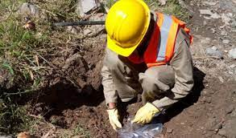
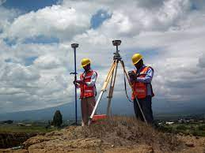
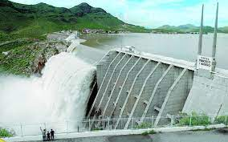
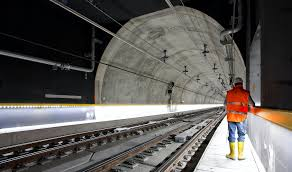
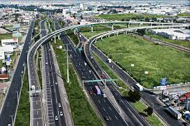
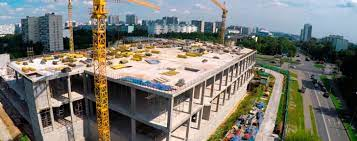
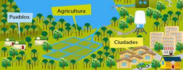

5.7 Etapas de estudio: Estudios preliminares de detalle, durante y después de la obra.
los trabajos preliminares son todos aquellos estudios, exploraciones, faenas o trabajo de reconocimiento de terreno que deben realizarse para tener todos los datos o antecedentes necesarios ya sea para la confección mar para confeccionar el proyecto y los diseños de la obra comparar estudio del programa de trabajo.
ESTUDIO DEL TERRENO
estudio del terreno es un dato esencial para la construcción de la obra y su conocimiento tiene una información primordial. Su naturaleza y su capacidad portante condicionan al sistema de cimentación ya menudo al tipo de obra; su dureza incluye la forma de ejecución y el precio de costos
los estudios geológicos de la zona indican los posibles terrenos a encontrar, sobre esta base se podrá elaborar un sondeo toma de muestra de la zona. si todos estos trabajos no se realizan con la debida supervisión, podrán dar datos erróneos y por lo tanto será más costoso volver a realizar los estudios
ESTUDIOS TOPOGRÁFICOS
los estudios fotográficos proveen una presentación gráfica de la superficie en la que se trabaja. Esto incluye su forma detalles, relieves, es decir que tan regular es su superficie con respeto las vías públicas. la topografía ayuda de terminar los procedimientos iniciales de proyecto y a supervisar la ejecución correcta en el desarrollo del mismo.es muy útil para determinar los espacios este estudio preliminar es muy importante para adecuar el diseño del edificio a la superficie del terreno de una forma efectiva
el estudio hidrológico tiene como objetivo conocer todos los cuerpos de agua cercanos al proyecto (arroyo, ríos, canales…etc.) que se encuentre en la superficie, para determinar el nivel del agua en el futuro las características climáticas de la región tienen gran importancia en la organización previa de la obra, ellas pueden impedir el trabajo en cierta hora del día.
OBTENCIÓN DEL PERSONAL
el ingeniero deberá informarse sobre la posibilidad de contratar distintas clases de operarios de la zona que necesite para la obra ,si su habilidad esta de acuerdo a los requerimientos de obra; cuáles son sus jornadas y las variaciones de estos con la demanda de operarios que puedan producirse por trabajos de temporada en la región.
CONDICIONES ECONÓMICAS
convendrá conocer las condiciones económicas de la región, su comercio, bancos, industrias relacionadas, con los materiales de construcción, maestranza, etc.., por la relación que ellas tienen con el abastecimiento de la obra y con el suministro de los artículos de consumo para el personal
SERVICIOS SOCIALES
en una obra de cierta importancia, que está alejada de un pueblo o ciudad, se forma una pequeña población de empleados y operario que necesita disponer de una serie de servicios, como servicio médico central…etc. los cuales deben existir en la obra o bien en un pueblo cercano al cual pueden ser transportadas las personas que necesiten usar de ellos, con rapidez, comodidad y seguridad
5.8 Presas, túneles, vías terrestres, edificaciones, ordenación del territorio y planificación urbana.
PRESAS
Obra civil que se construye a través de un curso de agua (rio o arroyo), con objeto de almacenar sus aguas. Debe contar con ciertas características: topografía, condiciones geológicas, mano de obra disponible, aspectos socioeconómicos. Su uso puede ser de dos tipos:
· Aprovechamiento (irrigación navegación, recreación, energía eléctrica)
· Defensa (control de avenidas y de azolves).
Los problemas geotécnicos que se presentan más frecuentemente en los sitios de construcción de presas son los fenómenos de geodinámica (deslizamientos y reptación), filtraciones (cavernas, cauces, fractura miento, solubilidad), resistencia de la roca, azolves, entre otros.
TÚNELES
Son excavaciones lineales subterráneas, de pequeña altura y anchura en comparación con su longitud, se clasifican en:
· Túneles de acceso a minas
· Túneles para transportes
· Para conducción de aguas
· Militares
· Túneles de utilidad publica
Los de con mayor frecuencia tenemos: Fallas, estratificación, filtraciones, anticlinajes y sinclinajes, rocas sometidas a esfuerzos, altas temperaturas y gases, etc.
VÍAS TERRESTRES
Es una de las obras de Ingeniería que más necesita de la información geológica desde su planeación hasta su conservación; ya que esto acarrea altos gastos en reparación y mantenimiento
EDIFICACIONES
Estructuras correspondientes a alguno de los tipos de edificios mencionados, están en su parte inferior en contacto con el terreno ya sea suelo o roca, lo que se conoce con el nombre de cimentación.
tipos de cimentaciones
· Cimentaciones pocas profundas (zapatas aisladas, corridas, losas, etc.
· Cimentaciones profundas (pilotes, pilas, cilindros, cajones profundos, entre otros).
Uno de los problemas que podemos enfrentarnos son aquellos materiales susceptibles de modificar su estado bajo la acción del agua como son los suelos y rocas expansivas.
ORDENACIÓN DE TERRITORIO
Es cuando desarrolla y gestiona los procesos de planificación y desarrollo de los espacios geográficos y territorios en el que se desea trabajar, tanto urbanos como rurales, a menudo regiones administrativas determinadas de escala local, regional o nacional, según sus posibilidades ambientales, económicas y sociales, propiciando su desarrollo sostenible.
PLANIFICACIÓN URBANA

la calificación reglas pelis especialización que realizarán está el ingeniero el arquitecto y otros profesionales es una técnica del urbanismo establece modelo para organizar varios y pío un área órgano ordenar una manera exacta los espacios es por ello que está relacionado con la ingeniería y la arquitectura es importante conocer la estructura de la propiedad ya que la planificación establece decisiones que afectan el derecho de esta.